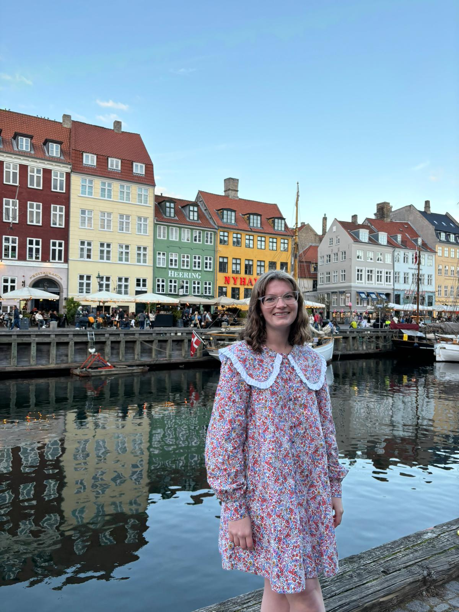
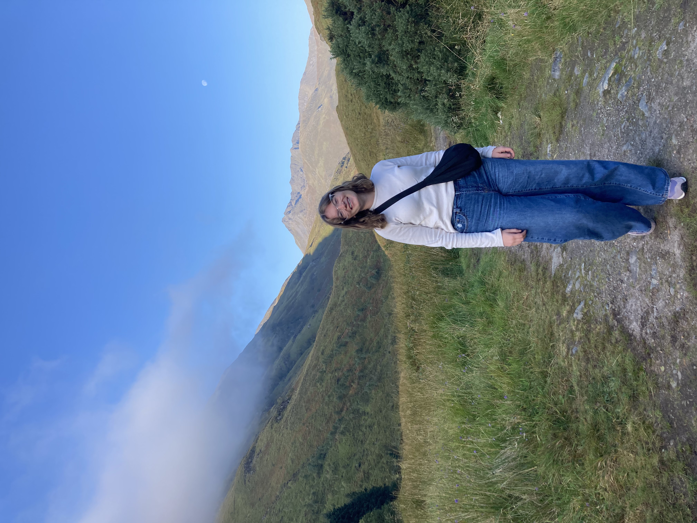
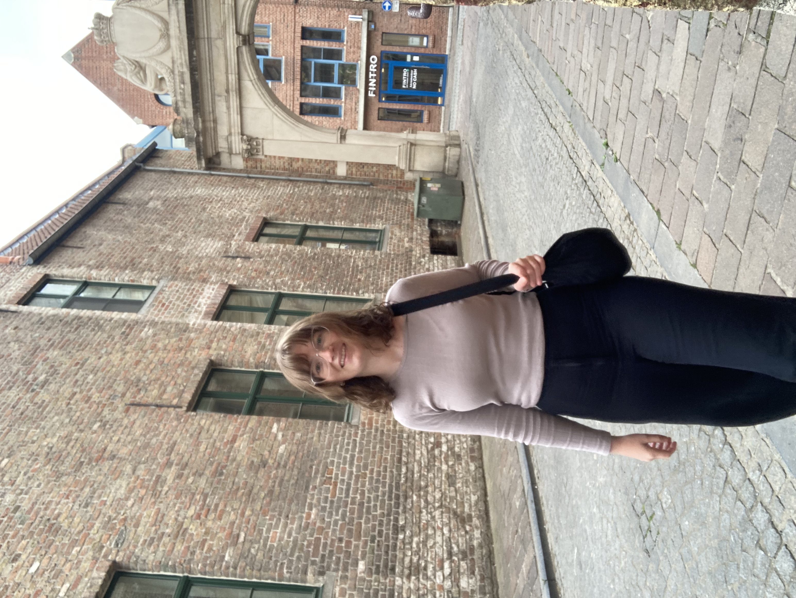
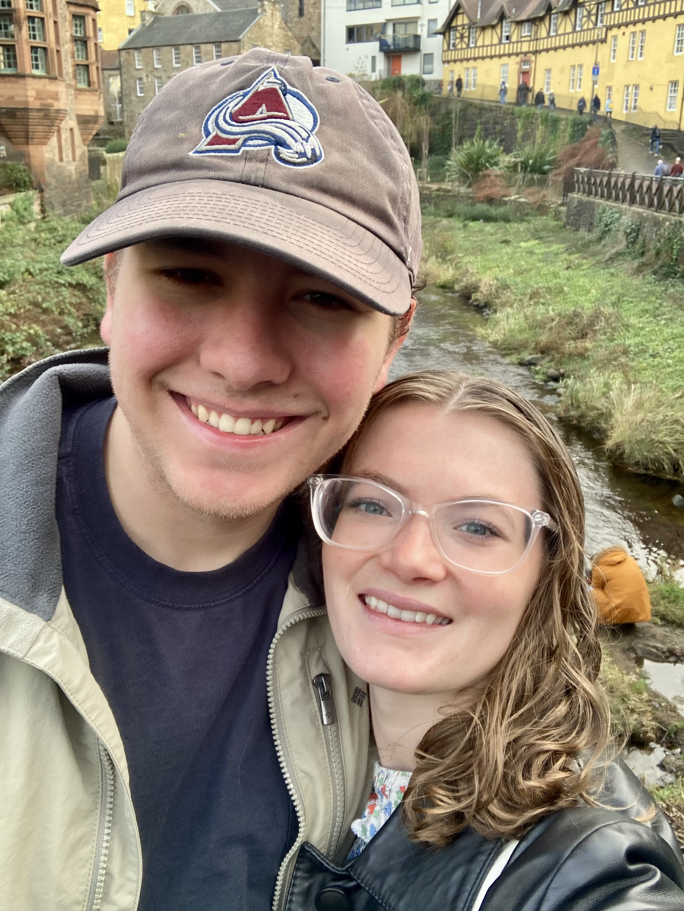

Travel Photos:




Hey! I'm Ellie! Apart from my passion for political science, which you saw in my resume, my single greatest passion is for traveling. As a high schooler, my parents moved my family to Japan. During this time, I caught the travel bug and never looked back! Currently, I am doing an internship abroad working at the Scottish Parliament in Edinburgh, Scotland. Parliament only sits from Tuesdays through Thursdays, so I have four day weekends every week—on these weekends, I like to go on trips to different countries around the UK and Europe! This page is dedicated to my travels this semester.